0. 課程資訊與教材
| 課程名稱 | 生成式 AI 應用電台・訂閱制第三季 第二堂 |
|---|---|
| 直播日期 | 2026/07/24（四）20:00，分兩段錄影，共約 2 小時 1 分 |
| 講師 | 益師傅（楊俊益，暱稱 ECF；智慧立方有限公司） |
| 本堂主題 | Node-RED 流程模擬、物聯網 3D 教學工具、簡報版型復刻，以及把整段流程封裝成可重複呼叫的 Skill |
| 課程教材 | Drive 資料夾「第二堂」：課堂錄影 ×2、Node-RED_Flow_Simulator_v4.html、Podcast-prompt_v13.4.html、兩份 Skill 檔（exploded-view-SKILL.md、Split_PDF_Chapters_SKILL.md）、簡報復刻說明與人物七種風格提示詞、PowerPoint 版型包 |
| 要先準備 | Codex 或 ChatGPT 訂閱（老師建議先訂一個月試），Groq API Key；想生圖再另外準備 Gemini API Key（付費） |
所以本頁只寫怎麼用，版型檔請到課程資料夾自行取用，不要再轉發出去。
1. 一張圖看懂這堂
| 時間 | 段落 | 在講什麼 |
|---|---|---|
| 一段 01:02 | Node-RED 模擬器 | 可以真的拉節點、寫程式、單步執行的流程模擬器，還能讓 AI 解析整條流程 |
| 一段 08:15 | PowerPoint 版型包 | 送版型，並預告等一下要教怎麼把自己的資料套進去 |
| 一段 13:09 | 物聯網 3D 爆炸圖 | 50 個感測元件與晶片，逐層拆解、可旋轉、附接腳圖與規格 |
| 一段 17:27 | 電路工作平台 | 一句話描述需求，直接生出接線圖、程式、教學包，還能雲端燒錄 |
| 一段 27:05 | 3D 圖的由來 | 他怎麼從別人的一張圖，逆推出自己的一整套產線 |
| 一段 33:36 | 簡報復刻 | 用 Codex 讓 AI 學會一份 PPT 的版型，把另一份資料復刻成同樣風格的 20 頁 |
| 一段 53:13 | 做成 Skill | 成功之後回頭把整段流程封裝成 Skill，並且參數化 |
| 二段 01:29 | 跨平台驗證 | 同一個 Skill 搬到 ChatGPT 可以，搬到 Gemini 風格對不上 |
| 二段 03:00 | Skill 實戰 | 用斜線呼叫，720 頁的書拆成 10 章 |
| 二段 08:16 | 七種風格圖像 | 怎麼下指令才會真的畫圖，而不是回你一堆提示詞 |
| 二段 24:44 | Podcast 提示詞產生器 | 把 NotebookLM 的語音摘要，從「隨便講講」變成可控的節目設定 |
「你可以把這個東西做成一個 Skill⋯⋯它就變成都是參數了，而不是固定就只能用哪一個檔案。你一定要變成參數。」
做成一次是成果，變成參數才是能力。
2. Node-RED 流程模擬器 v4［一段 01:02–08:00］
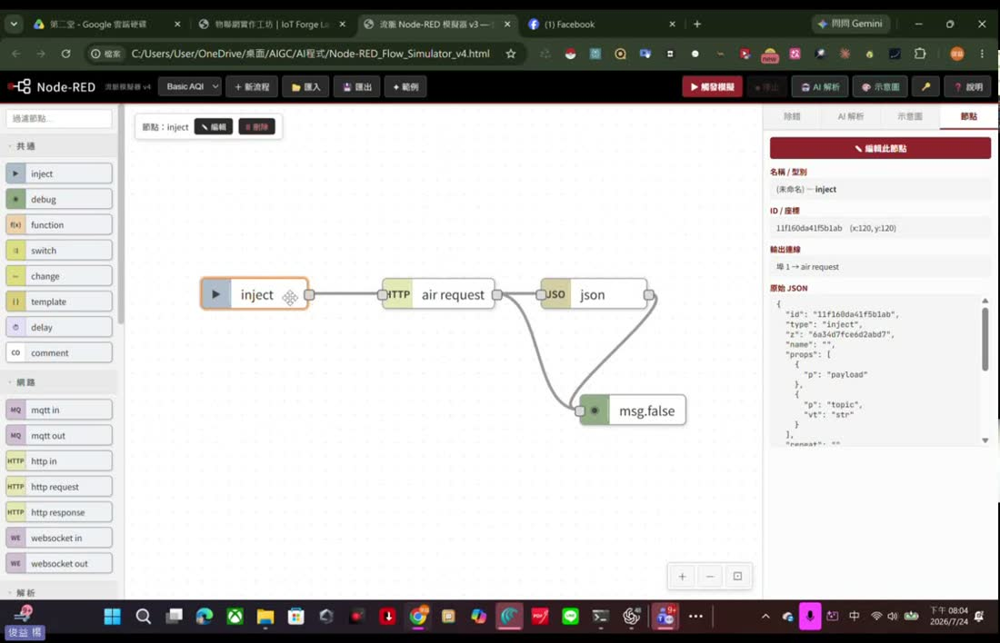
- 不是只有模擬。可以真的拉 inject、function、debug 節點，可以拉線，可以在裡面寫程式，然後觸發、單步執行、隨時停在某一步
- 可以匯入你自己的 Node-RED 流程，老師當場拉了一個 AQI 空品的流程進來，跑出真實資料
- 可以安裝新節點，包含他自己開發的節點，之後 AI 解析也能認得
- AI 解析要接 API Key：Groq 負責文字解析，Gemini 負責畫圖。Gemini 是付費的，他當時查到約一個月 420 元
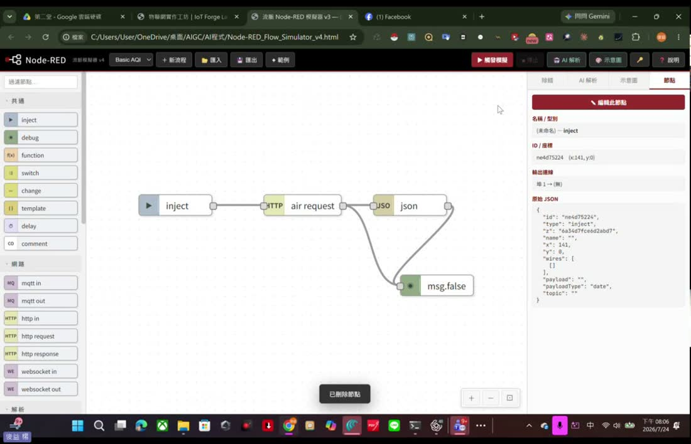
看到成本就想替代路徑，這是做工具的人跟只會用工具的人的差別。
「學這個你會覺得有點辛苦對不對？但是問題是當你會這些東西之後，你內心裡有一些流程的概念，你未來在學 Codex、或是 Claude Code、或是 N8N 這種 AI Agent 的部分，基本上你都可以克服了。因為 Node-RED 都懂了，基本上這些沒有所不懂的道理。」
換句話說：Node-RED 是流程思維的前置訓練。先在看得見的節點與連線上把流程想清楚，之後面對 Agent 就不會卡在觀念上。
3. 物聯網 3D 爆炸圖：50 個元件［一段 13:09–17:10］
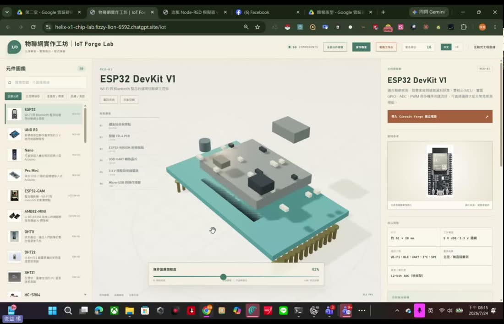
- 目前收了 50 個感測元件與晶片：ESP32、UNO R3、Nano、Pro Mini、ESP32-CAM、AMEB2-MINI、DHT11、DHT22、SHT31、HC-SR04 超音波測距、LCD1602 等
- 每個元件都給：逐層結構、原始示意圖、電氣特性、接腳圖
- 可 360 度旋轉、拉大層間距，做成 3D 爆炸圖動態展示
- 做了英文版可切換。老師的說法是「益師傅的企圖心很大，要送給國際的友人」
- 後續規劃：擴到上百個元件、加樹莓派、加 AI 提問功能，然後開放給更多人用
4. 把想法接上電：電路工作平台［一段 17:27–32:10］
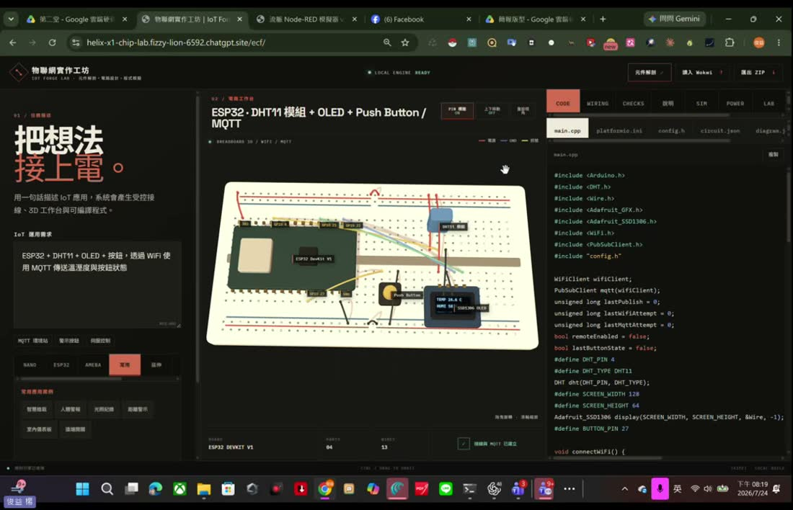
main.cpp、platformio.ini、config.h。［一段 18:08］當天的示範需求是一句話：ESP32 + DHT11 + OLED + 按鈕，透過 WiFi 使用 MQTT 傳送溫濕度與按鈕狀態。按下生成之後，接線、程式、宣告檔、定義檔一次到位。
它比積木程式多了什麼
有學員問這跟積木程式像不像，老師的回答是關鍵：「最大的差別就是它有教學的成分。」
| 功能 | 說明 |
|---|---|
| 接線教學 | 一步一步告訴你第一條線接哪、第二條線接哪 |
| 腳位檢查 | 接錯會報錯，並建議你換到哪一個腳位。「因為每個晶片的腳位都有它的特性在，有的可以接什麼，有的不能」 |
| 換腳位重生程式 | 換了腳位，程式會跟著改。老師建議老師們可以拿這個來出題 |
| 耗電量估算 | 算出總耗電，例如 200 mAh 大約可以撐一天多（沒開 WiFi 的情況） |
| 模擬器 | 顯示器輸入數值會跟著變、開關 on/off、蜂鳴器開關 |
| MQTT 測試 | 接收測試與配網設定 |
| 故障偵測 | 偵測目前接法的問題 |
| 規格與 datasheet | 每個元件的詳細規格，附原廠資料連結 |
| 雲端燒錄 | 透過 PlatformIO 在瀏覽器上編譯燒入，內建 13 個現成案例可直接燒 |
| 序列埠監聽 | 反向監聽晶片回傳的訊息，不是做假的 |
| 專案打包 | 可匯出 zip 給 Wokwi 吃進去做模擬，也可以把 Wokwi 的封裝包拉進來 |
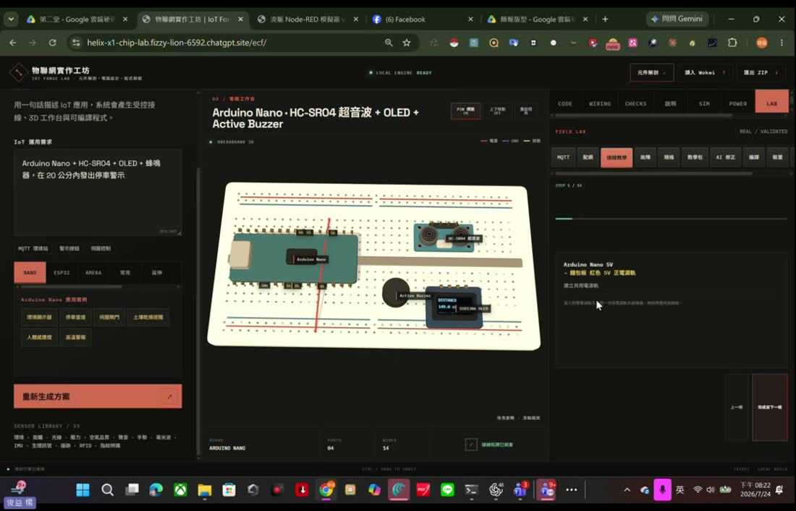
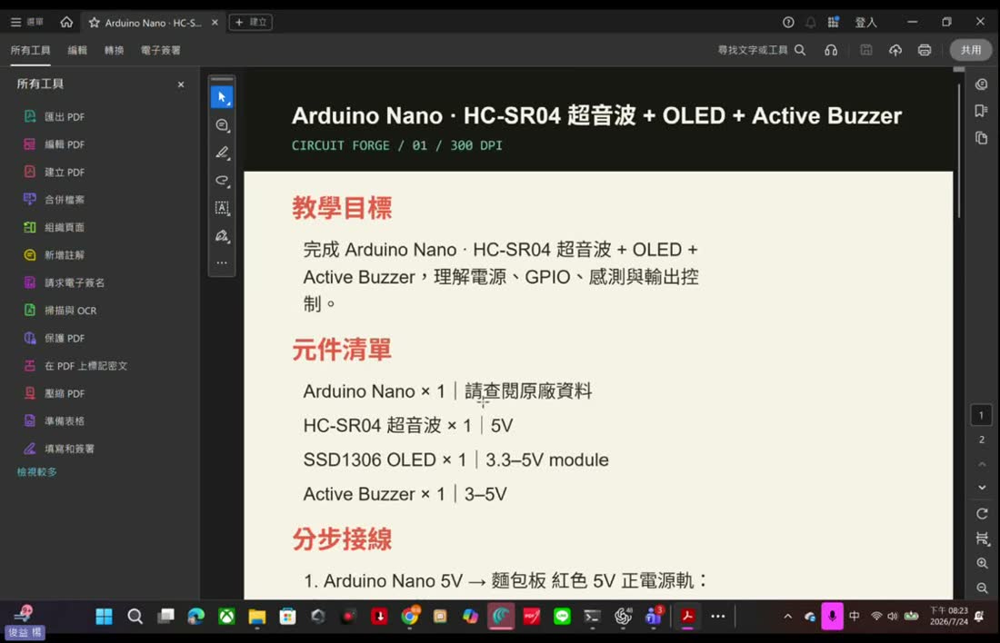
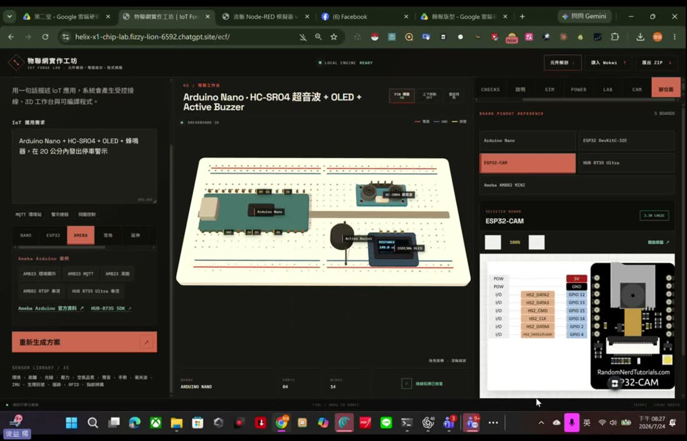
做完工具還想知道有沒有人用，這個念頭本身就值得學。
5. 那張 3D 圖是怎麼做出來的［一段 27:05–28:41］
有學員問他 3D 爆炸圖到底怎麼做的，他把整個過程講了一遍。這段是這堂課最值得抄下來的方法論之一。
- 先看到別人的成果。他在網路上看到有人用 ChatGPT 的繪圖模型，把晶片封裝一層一層用 3D 做出來，測試 CoWoS 那種堆疊結構的正確性。「一次就成功了，我看到那個東西我就很驚豔」
- 把提示詞收起來。「他有一個提示詞，我就給他收起來。」
- 自己先試一次。拿那個提示詞在自己的帳號上跑，「發現真的可以畫出那個圖」
- 不滿意就講出哪裡不滿意。「但是我就覺得那個圖黑黑的醜醜的，就覺得我不喜歡」
- 換成自己的題目，失敗了。「我就跟他講說，好吧，我想改成 ESP32 的結構圖。結果他畫出來不對」
- 給它參考物。「我說你可不可以參考我給他看我那個爆炸圖的 Mermaid？給了他，他就幫我畫出來囉」
- 再加上風格要求。「我說我要 3D 的高質感、淺色系的。哇，他畫出來有光質感喔」
- 找到訣竅就量產。「從那時候我就開始一系列的就這樣做下去了。我把所有的這些元件的 datasheet 給他看。」有些它會弄錯，有些它會自己上網找，就這樣堆疊到 50 組
整個過程沒有一步需要你會畫圖。
6. 簡報復刻：讓 AI 學會你的版型［一段 33:36–52:00］
這件事的起點是一個真實提問。老師說：「我上禮拜五在幫一個研習，一個老闆提到說，假如這樣子，會不會我給他一個簡報讓他去學習？」他回去驗證，答案是可以。
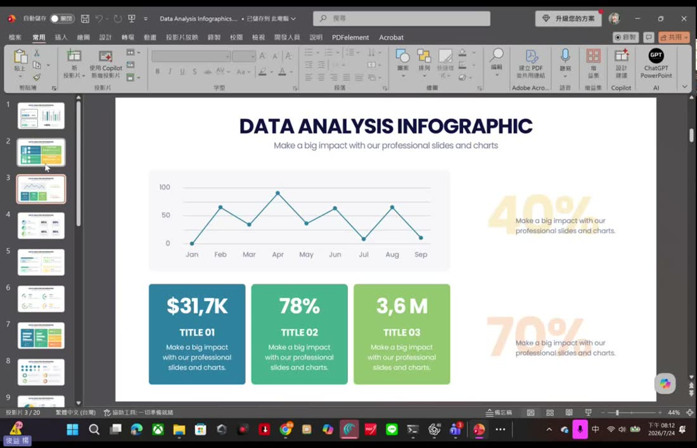
用 Codex 做的完整步驟
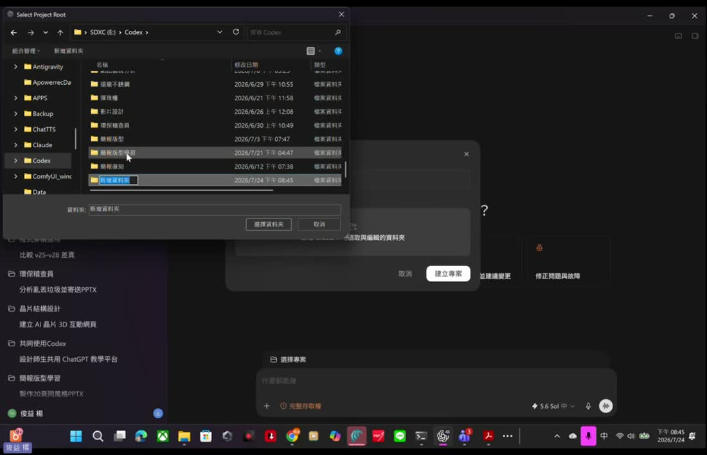
- 專案 → 按加 → 命名（例如「簡報版型風格複製」）
- 指定資料夾，選一個你固定放東西的位置。老師當場示範了反例：他第一次沒指定，加上名字重複，結果整個錯亂，只好全部刪掉重來
- 到設定 → 一般 → 打開「完整存取權」。不打開的話它每做一個動作都會回來問你，「停下來你也去忙別的事情，你就沒有注意到你要按下一步」
- 把要當範本的 PowerPoint 複製到那個資料夾
- 開新對話，貼上提示詞，把裡面的檔名改成你自己資料夾裡的檔名（它會去資料夾裡找這個檔案）
- 送出，等它跑
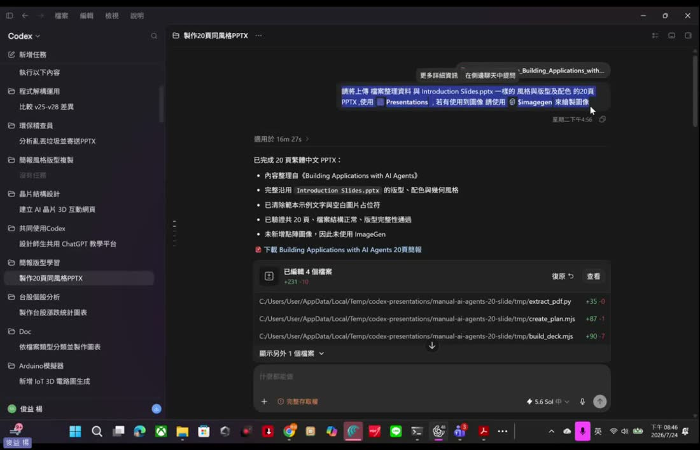
「當它出現這個風格的時候，你都不要選。你都不要選喔，真的，你只要選了之後，它會以它的風格為主。你就千萬不要選，你就不要管它。」
因為你要的是「學會你給的版型」，不是「用它推薦的漂亮版型」。
結果：花 16 分 27 秒，做出 20 頁
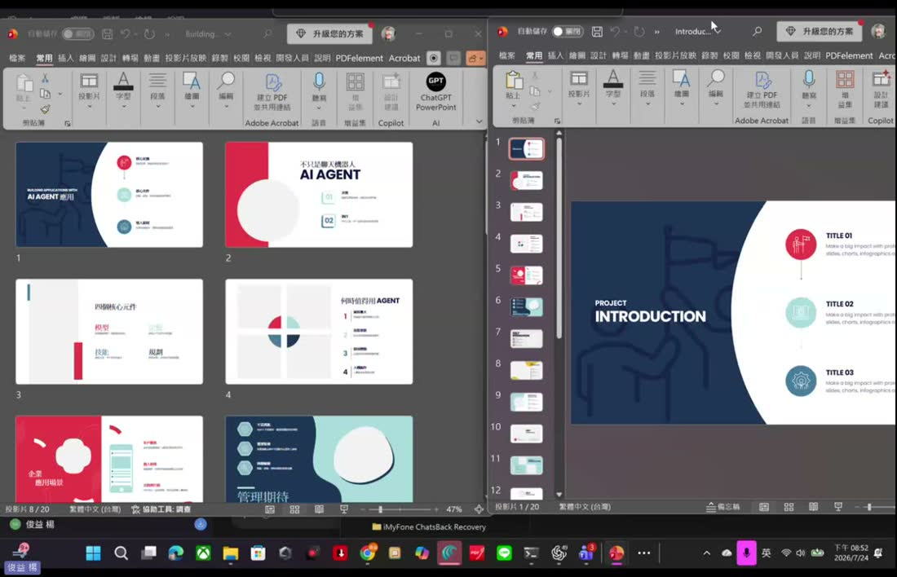
他驗證的方式很實在：把原始版型跟產出並排、都切成格狀縮圖，一頁一頁對。字體、大字體、版面結構、曲線圖位置都對得上。
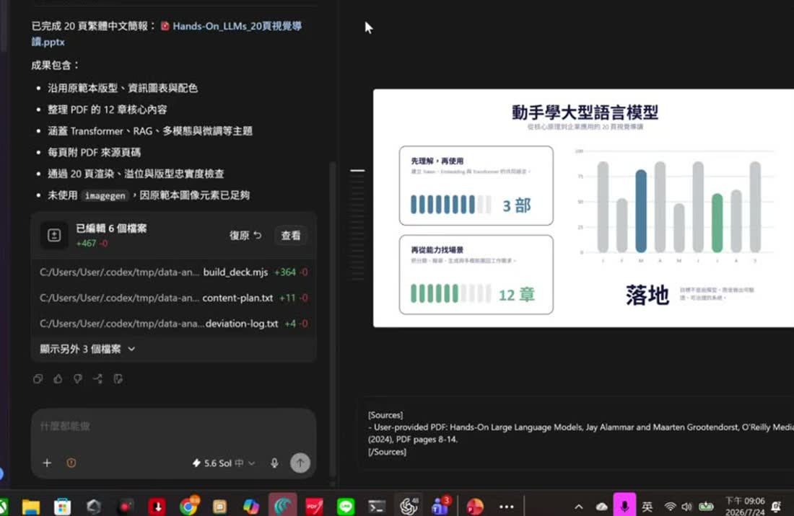
deviation-log.txt。［一段 64:57］這就是下一章要講的，Agent 跟聊天最大的差別：它會回頭檢查自己做得對不對。
7. 把流程變成參數化的 Skill［一段 53:13–65:50］
做成功了，然後呢？大部分人到這裡就結束了。老師沒有。
第一步：請 AI 把剛剛做的事寫成 Skill
他的動機很實際：「並不是每一個人都會去用 Codex。那假如在 ChatGPT 你有付費、但是你沒有用 Codex 的人，一樣可以做，那不是很好嗎？」
結果拿到一份很長的提示詞檔。他自己笑說：「你會發現這個提示詞一看就知道不是我寫的。」
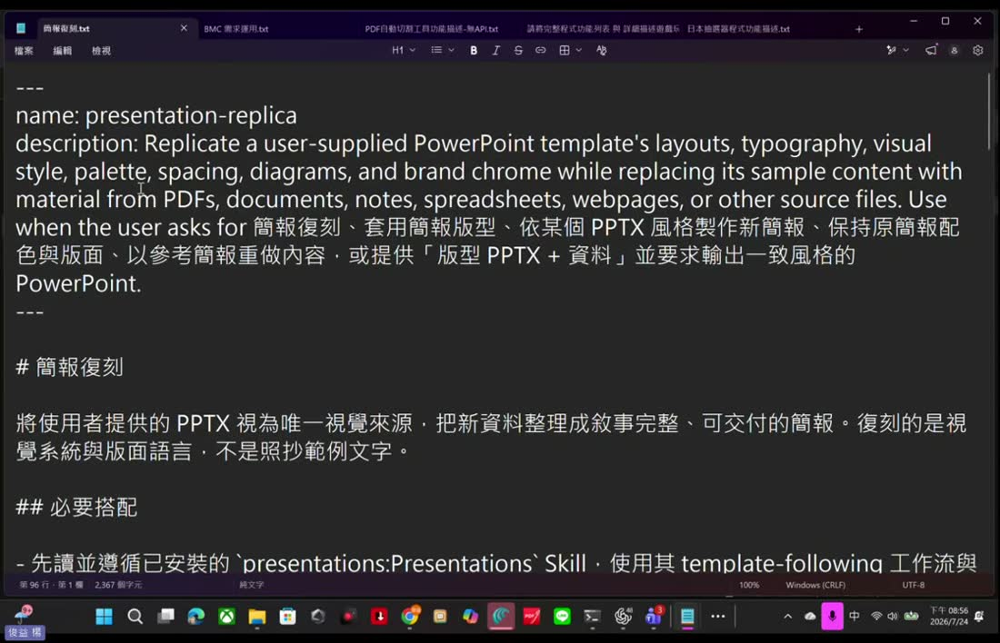
第二步：Skill 不是綁在一個平台上的
那 ChatGPT 呢？「當然是可以的。」
他接著講了一段很到位的話：「因為沒有人告訴你不能這樣子用啊。大家好像就是覺得 Skill 就是 Skill，不能用在別的地方。沒有這道理啦。任何地方都可以用。畢竟它只是一個提示詞，它只是一個 prompt。」
唯一的例外他也講清楚了：「除非裡頭有提到串接的運用⋯⋯串接就沒辦法。只是單純它只是一個描述、去取出它的特色來講的話，你當提示詞都可以用。」
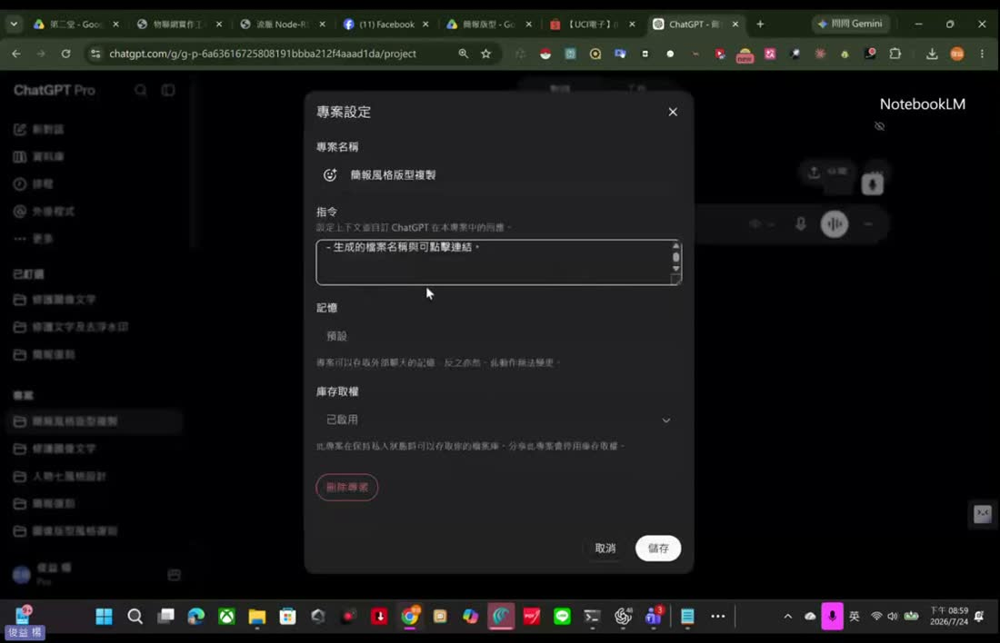
- ChatGPT 專案 → 加 → 命名 → 建立
- 點中央（或右上三個點）進到指令，把整份 Skill 內容貼進去，儲存
- 到資料來源，上傳你要它學的版型檔。可以放很多份：風格一、風格二、風格三，或是對 A 廠商、B 廠商、C 廠商的不同簡報
第三步：最關鍵的一句話
它就變成都是參數了，而不是固定就只能用哪一個檔案。你一定要變成參數。」
沒參數化的 Skill：只能復刻那一個檔案，換一份版型就要重寫。
參數化之後：它變成一個能力，你給它任何版型加任何資料，它都照做。
老師最後說：「所以你知道為什麼益師傅那個 Skill 嗎？就是我這樣講，它幫我做出來的。」他自己的 Skill 庫，就是這樣一個一個長出來的。
8. 跨平台實測：哪個行、哪個不行［二段 01:29–15:45］
他沒有只講「應該可以」，而是當場帶全班一起測。
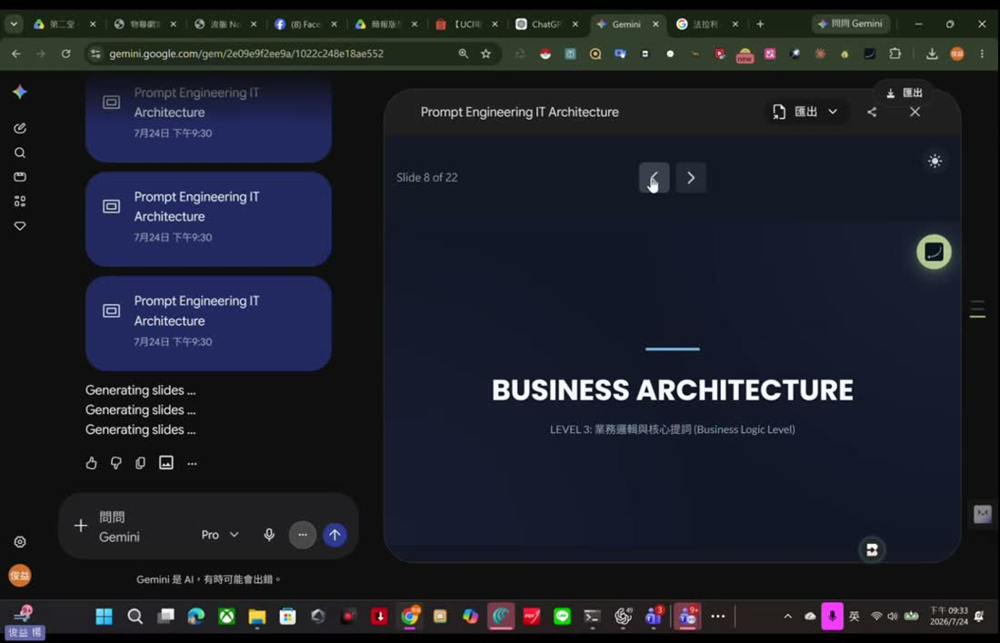
| 平台 | 結果 |
|---|---|
| Codex | ✅ 成功。老師的主力做法 |
| ChatGPT 專案 | ✅ 成功。適合有訂閱但不熟 Codex 的人，做好還能分享給別人用 |
| Claude Code | ✅ 學員當場測成功 |
| Gemini Anti-gravity | ✅ 學員當場測成功 |
| Gemini（聊天） | ❌ 風格對不上。「它雖然都做出來了，但這個跟我要的風格完全都不同。雖然也很標準，但是這個不符合我的需求」 |
他也公開道謝：「感謝剛剛的分享，模型選對了就沒有問題。」
把驗證分散給全班做，是一種很聰明的教學方式：既確認了方法通用，也讓每個人真的動手。
9. 模型選擇的經濟學［二段 00:00–01:14 · 13:38–15:20］
他一開始用「超高」推理跑，結果跑完之後做了一件事：降一級再跑一次，看結果一不一樣。
驗證結果：「高就可以了，不用寫到超高。」
學員之前用「中」也成功過。所以實際結論是：這個任務用中到高就夠，超高是浪費。
10. Skill 實戰：拆書與爆炸圖［二段 01:45–08:10］
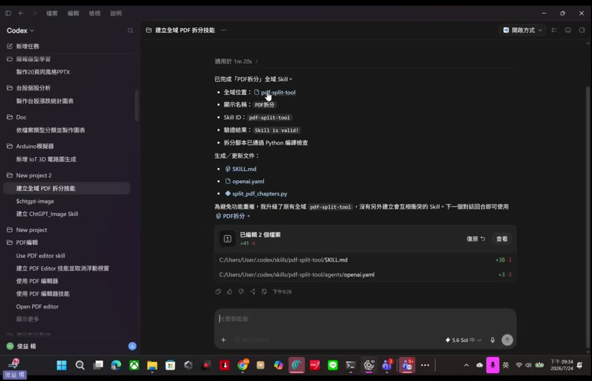
- 安裝好之後，打 斜線 就會跳出可用的 Skill 清單
- 選 PDF 拆分，然後什麼都不用說，直接把 PDF 丟進去送出
- 爆炸圖那支他做成全域的，「在任何專案裡頭都可以做這樣的運用」，以後只要把圖丟進來就能直接呼叫
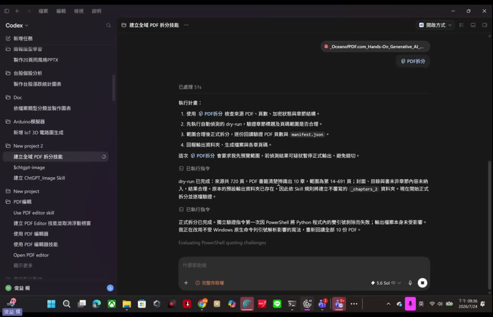
「但是我給你那個程式更快，對不對？還不用耗點數。」
Skill 版要扣 AI 的點數，網頁版免費而且更快。他建議「你自己評估在哪邊做會比較方便」。
那 Skill 版的優勢在哪？在於它可以接下一步：拆完可以直接寄 Mail 給你，或串到 NotebookLM 做成 Podcast。單機工具做不到這件事。
11. Agent 跟聊天寫程式差在哪［二段 06:07–07:00］
有人問他，在 Claude 或 Gemini 的聊天視窗寫程式，跟用 AI Agent 寫，差別到底在哪。他的答案很具體。
所以簡單的東西，聊天就夠了。差別出現在複雜的時候：
「假如你今天是屬於程序上比較複雜的，你用 AI Agent 來做有一個好處，他會去檢視自己，他會去檢視自己到底哪一段有問題。」
他舉的例子很好懂：「我說請他幫我順便上架，他會去檢查說他的上架結果，他自己預覽效果好不好。可是我們自己開發程式卻不會有這樣的一個狀況。可是 AI Agent 他卻可以幫你做這個事情。」
deviation-log.txt，就是「它會去檢視自己」的具體長相。你不用相信它做對了，因為它自己會回頭看，而且把看的結果留下來給你查。
12. 七種風格：怎麼讓它真的畫圖［二段 08:11–23:30］
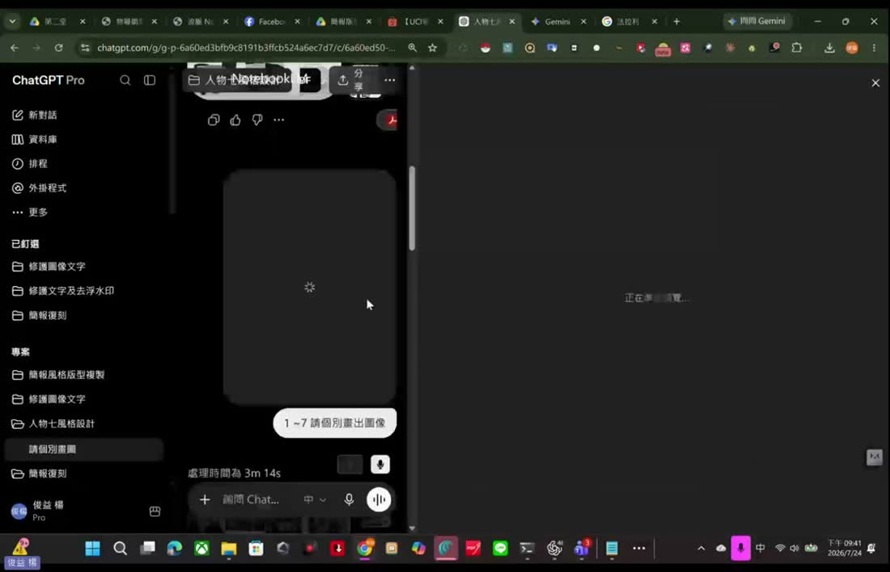
三個讓它乖乖畫圖的訣竅
- 一次講完要幾張。「跟他講說 1 到 7 請個別畫出圖像，不然他會問你，他會問你說你到底要什麼，很浪費時間」
- 指定編號時要補「請畫出圖像」。「你要 3 的話，你不要只有輸入 3。我發現在 Gemini 或 ChatGPT，他會寫出一大堆提示詞，他就是不畫，你要跟他講『再畫出圖像』，又浪費一次」
- 專案設定裡務必勾「創作圖像」。老師連講三次「務必」，不勾它就不會畫
AI 吐出來的中間過程往往比最終答案更有料，看到就收下來。
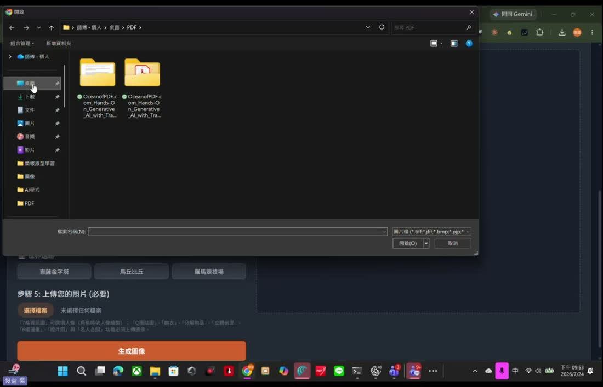
- 用 Gemini 3.1 Flash Lite Image，十幾秒一張，一張約 1 元
- 解析度最高 1024×1024。老師的評估：「就一般的教學，或是所謂的一些社群文案貼圖的部分，你當都是夠」
- 要生圖就是要付費，他講得直接：「你說可是這個東西不是就是要花錢嗎？答案是的」
13. Podcast 提示詞產生器［二段 24:44–50:30］
這支不產生 Podcast，它產生的是給 NotebookLM 用的提示詞。老師解釋差別：「這邊比較快，這邊可以生成你要的提示詞能用。」
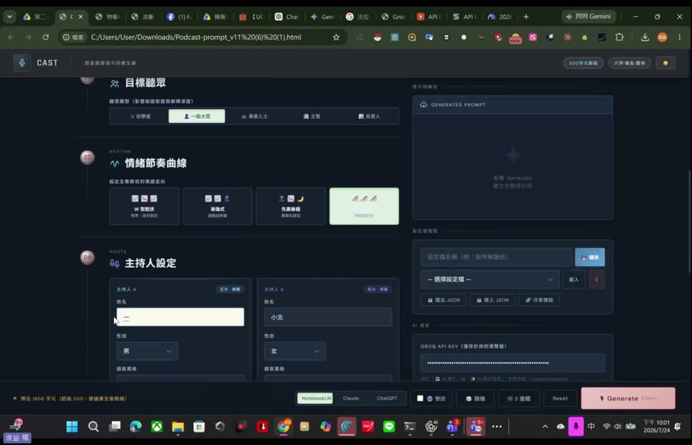
可以設定什麼
| 項目 | 選項 |
|---|---|
| 聽眾對象 | 初學者、一般大眾、專業人士、主管或投資人 |
| 敘事節奏 | 漸進式、先高後穩、上上下下 |
| 主持人 | 自己命名（他當場設「益師傅」跟「小美人」）、選性別、寫風格 |
| 要不要自我介紹 | 要的話它會講自己是做什麼的 |
| 時間長度 | 20 分或更長 |
| 對談風格 | 輕鬆對談、辯論交鋒等四種 |
| 必提關鍵字 | 一定要提到的東西，「他還是會提到關鍵字」 |
| 禁止提及 | 不得出現的主題，例如品牌名稱、政治立場 |
| 額外要求 | 繁體中文、口語化、幽默、引用數據、預告下集、互動提問 |
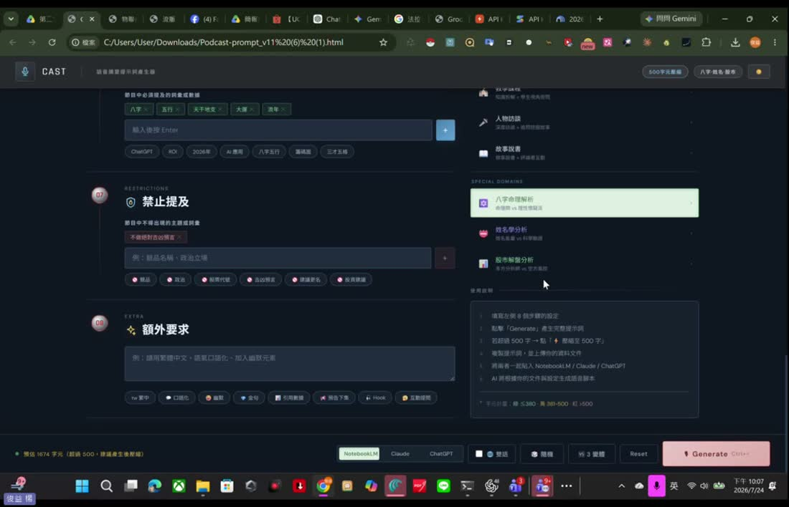
「假如你要探索一個主題，我都建議選辯論。假如你想要探索一個文案、你自己寫的資料，你不確定到底好或不好⋯⋯麻煩你做一份叫做辯論，另外一個會站在反對方來看你相關文件的資料。
這樣很好啊。有時候因為 LLM 被我們訓練，他訓練出來都是講好話。你可以勾選辯論，讓他站在不同的觀點來看這件事情。」
用機制對抗 AI 的討好傾向，這比提醒自己「要保持懷疑」有效得多。
一個順手的小技巧：把圖片塞進單檔工具
「你就丟一張圖跟他講，你要去背，並且把這個圖透過 base64 直接給塞進去，他就幫你做好囉，他就幫你做在你的程式裡頭。」
「所以你的程式都永遠不用擔心只能用那些 emoji 的小圖，你也可以做一些漂亮的圖放在裡頭。」
他的完整流程是：網路上找圖 → 用 ChatGPT 轉成向量圖 → 改顏色 → 做成最終圖 → 丟給 AI 說「幫我去背、放右上角、要有微微飄動的感覺」。
然後他下了一句結論：「全部都用講的。全部都腦袋有想法，你用講的把它講出來，他自然就可以幫你做。」
14. 現場的真實
他做到一半發現自己想太多
「我乾脆講，連那個聲音都不用 copy，然後下拉，他自己內定拿幾種聲音可以選擇，這樣不更棒⋯⋯你看，層次就是這樣一直改過。改一改，我幹嘛挖一個坑給自己跳？」
後來他還問全班：「你們覺得要這樣做嗎？有需要這樣做嗎？」沒人回應，他就說「那就先不做吧，你們就直接用到 NotebookLM 裡頭來做就好了」。
知道什麼不該做，跟知道什麼該做一樣重要。他最後也講了那個技術上的真正原因：NotebookLM 可以用很少的資料生成一二十分鐘的內容，「它內容會直接去填充、去把它給強化」，自己重做這段反而更麻煩。
他也會找不到自己的檔案
示範圖像工具時，他連續給錯版本，翻了好幾次日期才確認：「不好意思，我這個再整理一下給大家好不好⋯⋯我搞錯了，我是要給你們另外一個程式。」跟他在其他堂課遇到的狀況一樣，同時開很多專案、每支又改很多版，版本管理本身就是個問題。
他反覆測到有把握才敢講
這句話值得放在心上：他給學員的每一段提示詞，背後都有一輪自己先撞過的牆。
15. 老師金句
16. 資料來源與整理說明
- 原始教材：Google Drive 資料夾「第二堂」，課堂錄影兩段，加上 Node-RED 模擬器、Podcast 提示詞工具、兩份 Skill 檔、簡報復刻說明與 PowerPoint 版型包。
- 整理方法：本頁依據該資料夾內既有的「完整逐幀筆記」素材撰寫：第一段 264 張畫面、790 段逐字稿；第二段 223 張畫面、707 段逐字稿，每 15 秒保留一張實際畫面並附 OCR 與同期口述。從中挑出 21 張關鍵畫面重新整理成本頁。
- 錄影的一個狀況：第一段 MP4 的容器標示 69 分 34 秒，但 65 分 55 秒之後已經沒有可解碼的畫面與音訊，是原始檔本身的問題。本頁依實際可讀內容整理，第二段 55 分 34 秒正常。（此點以兩種獨立方式量測，結果一致。）
- 引號內的發言取自逐字稿，僅去除口語重複與語助詞，並修正可確定的辨識錯字（講師姓名、Codex、Claude、Gemini、NotebookLM、Groq、MQTT、Mermaid、Wokwi 等工具名）。不確定的一律不改也不寫進來。
- 刻意未收錄：老師購買的 PowerPoint 版型包不隨本頁散布；取得電子書的操作步驟與相關網站名稱不寫成教學；課堂閒聊與個股討論不列入整理。
- 隱私處理：所有截圖已裁掉錄影右側的線上參與者名單，其中一張另外裁掉了含第三方檔名的區域。
- 本堂沒有課後作業。老師的建議是拿簡報復刻多練幾次，並特別說「你故意拿有曲線圖跟圖檔的部分，可以試試看」。